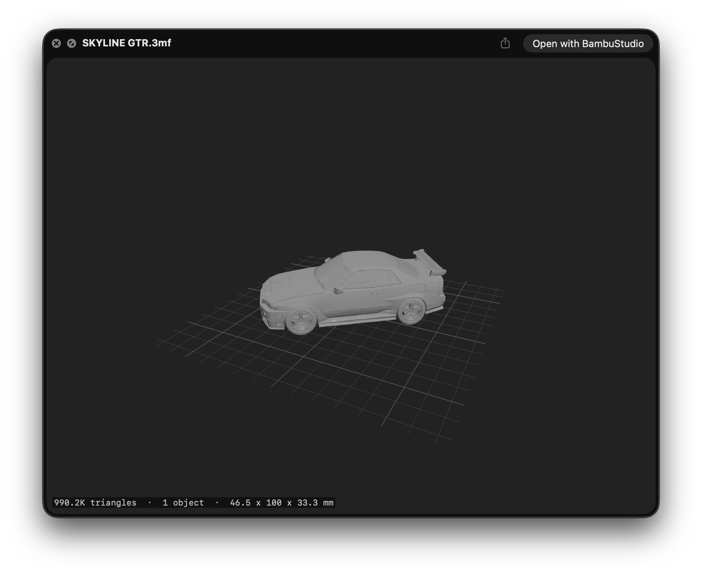

.3mf files instantlyA 3MF viewer for Mac built into Quick Look. Press Space to open a .3mf file on Mac and see a 3D preview of the model — no slicer needed.
Free & open source · Universal (Apple Silicon + Intel) · Signed & notarized · macOS 13+

A proper 3D preview right in Finder and Quick Look, plus a 3MF thumbnail in Finder on every icon.
Press Space in Finder — the model appears, no app to open.
SceneKit with proper lighting, shading, and materials.
Spins around the vertical axis so you see every side.
Orbit and zoom with your mouse or trackpad in the preview.
Renders per-object and per-triangle material colors when present.
Triangle count, object count, and dimensions parsed from the file.
Rendered icons for .3mf files, reusing the slicer's embedded preview when available.
Handles Bambu Studio, PrusaSlicer, and component assemblies.
Preview and app adapt to your system appearance.
Takes about a minute.
/Applications..3mf file in Finder.💡 If Quick Look doesn't pick it up immediately, run qlmanage -r in Terminal to reset the Quick Look cache.
A .3mf file is a ZIP archive of XML model data.
Extract & parse. Preview3MF pulls the .model files from the archive and reads the vertices, triangles, build items, materials, and metadata.
Resolve assemblies. Component references are expanded so assembly objects become their part meshes with composed transforms.
Render. It builds SceneKit geometry with per-face normals for flat shading, a build-plate grid, three-point lighting, and an auto-framed camera.
Thumbnails. Slicers usually bake a rendered PNG into the package — the thumbnail extension reuses that as a fast path and only falls back to SceneKit when none is present.
Everything about previewing and opening .3mf files on a Mac.
Install Preview3MF, then select any .3mf file in Finder and press Space. Quick Look opens a real 3D preview of the model that you can orbit and zoom — no slicer and no extra app to launch.
By default macOS has no idea how to render .3mf files, so they fall back to a generic icon. Preview3MF adds a thumbnail extension that draws a proper 3MF thumbnail in Finder — reusing the slicer's embedded preview image when there is one, and rendering the mesh itself when there isn't.
If icons don't refresh right away, run qlmanage -r in Terminal to reset the Quick Look cache.
No. Preview3MF reads .3mf files directly, so you can open and inspect a model without launching Bambu Studio, PrusaSlicer, or Orca. It handles files exported by all of them, including multi-object plates and component assemblies.
3MF (3D Manufacturing Format) is a modern file format for 3D printing — a ZIP archive of XML that stores the mesh along with colors, materials, and print metadata. It's the default project format for slicers like Bambu Studio and PrusaSlicer, and unlike .stl it can carry multiple objects, colors, and units in a single file.
Yes — it's completely free and open source under the MIT License. The builds on the releases page are signed and notarized by Apple, so Gatekeeper opens them without warnings.
Preview3MF runs on macOS 13 (Ventura) and later and ships as a universal binary, so it runs natively on both Apple Silicon and Intel Macs.